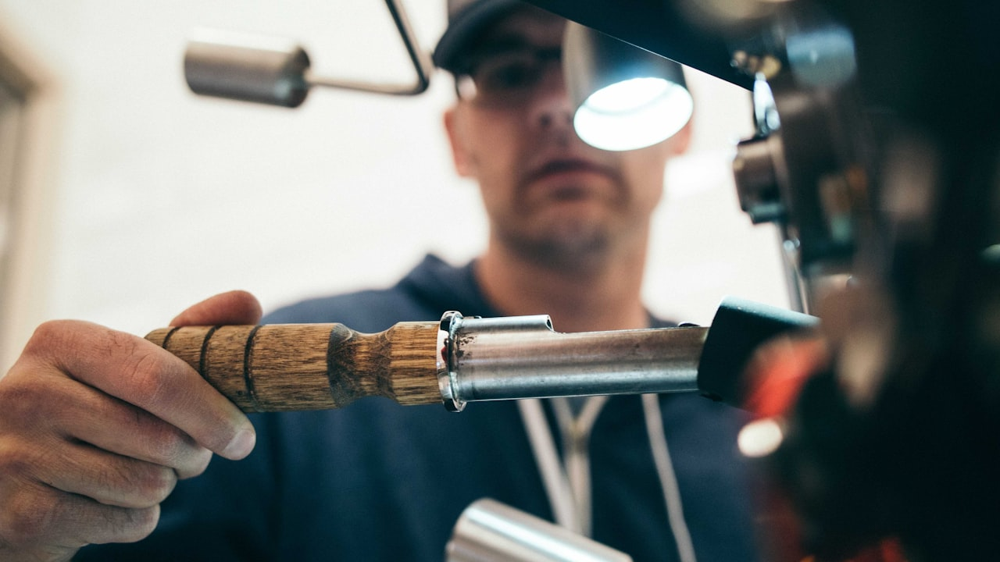

Les frites maison (four, air fryer ou friteuse) restent un classique — mais un feu de cuisine part vite quand l'huile surchauffe. Voici une recette simple, les reflexes anti-incendie, et ce que couvre votre assurance habitation en cas de degats. Devis habitation · questionnaire MRH.

Recette : frites croustillantes au four (plus safe que la friteuse)
Pour 4 personnes : 1 kg de pommes de terre (Agata ou Bintje), 2 c. a soupe d'huile, sel. Eplucher, couper en batons, rincer, secher. Melanger avec l'huile. Four 220 °C (chaleur tournante), 25–30 min en retournant a mi-cuisson. Variante air fryer : 180 °C, 15–18 min. Moins de graisse = moins de risque de feu qu'une friteuse remplie d'huile bouillante.
Friteuse classique : 5 regles anti-feux
- Huile propre, sans eau (pommes de terre bien seches)
- Ne jamais remplir au-dela du maxi indique
- Eteindre et debrancher si vous quittez la piece
- Extincteur ou couvercle anti-feux a portee — pas d'eau sur un feu de graisse
- Hotte et filtres entretenus (depot de graisse = risque incendie)
Feu de cuisine : que faire en 30 secondes
Couper le gaz ou le courant, couvrir avec un couvercle metallique ou eteindre avec un extincteur poudre/CO2 (pas d'eau). Evacuer si le feu se propage, appeler les pompiers (18 / 112). Une fois maitrise : ventiler, ne pas jeter l'huile brulante a l'evier (fuite + degats des eaux).
Assurance habitation : incendie, fumee, RC voisin
La multirisque habitation couvre en general : degats au logement (murs, hotte, meubles), contenu (electromenager), frais de relogement temporaire selon contrat, et la responsabilite civile si le feu touche un voisin (immeuble). Verifiez les plafonds mobilier et la franchise incendie. Locataire : vous etes responsable envers le proprietaire pour les risques locatifs. Guide locataire / proprietaire.
Declarer un sinistre cuisine (checklist)
Photos avant nettoyage · conserver factures friteuse/four · appeler l'assureur sous 5 jours ouvrés (delai contractuel) · ne pas jeter l'appareil avant expertise si demande · garder numero de contrat accessible. Sous-assurance = indemnisation plafonnee : voir sous-assurance sinistre.
Friteuse vs air fryer : impact assurance
L'air fryer reduit la quantite d'huile bouillante — donc le risque de feu de graisse. Votre prime MRH ne change pas pour autant, mais le profil de sinistre est plus faible. Verifiez que l'appareil est bien declare dans le capital mobilier en cas de vol ou incendie.
RC habitation : voisin de palier
En appartement, un feu de cuisine peut endommager le logement du voisin (fumee, eau des pompiers). La responsabilite civile de votre contrat habitation intervient — sous reserve de plafonds. Comparez votre MRH.
Pourquoi ce sujet compte pour votre feu de cuisine friteuse
Que vous soyez en recherche d'un devis feu de cuisine friteuse, en renouvellement ou en reaction a l'actualite, l'objectif reste le meme : comprendre vos garanties, comparer a postes equivalents et eviter les exclusions cachees. Les termes suivants reviennent souvent dans les contrats : feu de cuisine friteuse, feu graisse assurance habitation, recette frites maison, sinistre incendie cuisine, multirisque habitation MRH, devis assurance habitation, locataire risques locatifs.
Les garanties a verifier avant de signer
- Plafonds et franchises : ce qui reste a votre charge apres sinistre
- Exclusions : situations non couvertes (usure, negligence, zones a risque…)
- Delais : carence, declaration de sinistre, traitement du dossier
- Options : assistance, protection juridique, extension famille ou materiel
- Prix annuel : hors promotions — refaire un comparatif chaque annee
Comparer sans se fier au seul prix affiche
Un tarif bas peut masquer un plafond bas ou une franchise elevee. Demandez un tableau comparatif avec les memes postes : feu graisse assurance habitation, recette frites maison, sinistre incendie cuisine. C'est la methode utilisee par les courtiers pour aligner Allianz, AXA, April, Generali, Zéphir, Solly Azar et le reste du marche.
Erreurs frequentes a eviter
- Souscrire en ligne sans lire les exclusions ni les plafonds
- Oublier de mettre a jour le contrat apres un demenagement, divorce ou changement d'activite
- Resilier avant d'avoir une attestation de remplacement (risque de rupture de garantie)
- Ne pas declarer un sinistre dans les delais contractuels
- Ignorer la clause de beneficiaire (prevoyance, assurance-vie, deces)
Lexique et mots-cles utiles (feu de cuisine friteuse)
- feu de cuisine friteuse : terme central de cet article — a retrouver dans votre contrat ou devis
- feu graisse assurance habitation : a comparer entre assureurs a garanties equivalentes
- recette frites maison : a comparer entre assureurs a garanties equivalentes
- sinistre incendie cuisine : a comparer entre assureurs a garanties equivalentes
- multirisque habitation MRH : a comparer entre assureurs a garanties equivalentes
- devis assurance habitation : a comparer entre assureurs a garanties equivalentes
- locataire risques locatifs : a comparer entre assureurs a garanties equivalentes
Comment obtenir un accompagnement Leads Opportunities
Notre equipe de courtiers ORIAS vous aide a comparer, resilier ou souscrire avec un langage clair. Formulaire en ligne, demande de rappel ou parcours devis selon votre besoin : feu de cuisine friteuse, sans engagement.
Consultez aussi notre catalogue complet des assurances (sante, auto, habitation, emprunteur, prevoyance, VTC, animaux) et nos pages SEO par ville pour un devis localise.
Questions frequentes
Comment comparer une offre feu de cuisine friteuse en 2026 ?
Listez vos besoins reels (budget, garanties, situation familiale ou pro), puis demandez un comparatif a garanties equivalentes. Un courtier ORIAS explique les exclusions avant de signer.
Le devis est-il gratuit et sans engagement ?
Oui chez Leads Opportunities : devis gratuit, accompagnement humain, aucune obligation de souscription immediate.
Puis-je changer d'assureur en cours d'annee ?
Selon le contrat : loi Hamon, loi Chatel, loi Lemoine (emprunteur) ou echeance annuelle. Verifiez delais de preavis et equivalence de garanties.
Quels documents preparer pour un devis ?
Contrat actuel, dernier avis d'echeance, sinistres des 3 a 5 ans, situation (locataire, emprunteur, salarie, independant).
Courtier ou comparateur en ligne : quelle difference ?
Le comparateur affiche un prix ; le courtier verifie les plafonds, franchises, delais de carence et la compatibilite avec votre profil.
Cet article Frites maison sans drama remplace-t-il un conseil personnalise ?
Non : il informe sur les garanties et mots-cles utiles. Une etude personnalisee reste necessaire avant de resilier ou souscrire.